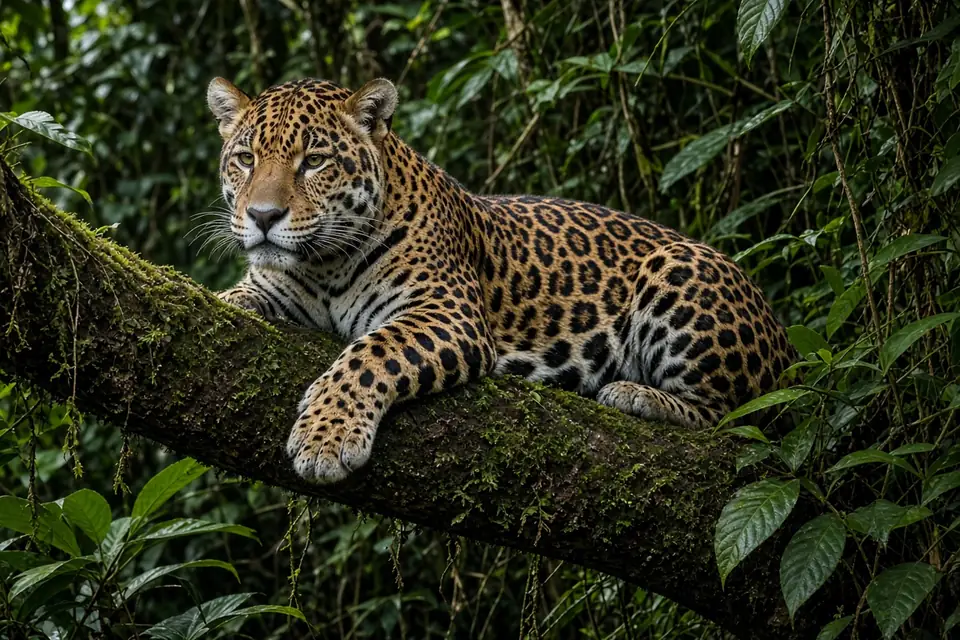

Home › Blog › What do jaguars eat?
What do jaguars eat? What the research on jaguar diet and prey shows
Jaguars eat a wide range of animals, and what they eat depends heavily on where they live. In rainforests of Belize and Guatemala, scat studies show that medium sized prey such as nine-banded armadillos, pacas and coatis dominate the diet. In Brazil's Pantanal wetland, GPS collared jaguars mostly killed cattle, caiman and peccaries, and made a kill about every 4.3 days on average (Cavalcanti and Gese, 2010). Across 25 studies, the prey jaguars most clearly preferred were capybaras and giant anteaters (Hayward and colleagues, 2016).
A flexible hunter, not a picky one
The jaguar is the largest cat in the Americas, but it does not specialise in one kind of prey. The IUCN Cat Specialist Group lists more than 85 prey species recorded in jaguar diets, from peccaries and deer to turtles and fish. Researchers measure diet in two main ways: by collecting droppings (scats) and identifying the hair, bones and scales inside, or by fitting GPS collars and visiting the places where a cat lingered to find the remains of kills. Both methods tell a similar story: jaguar diet tracks the local prey community, with some clear preferences on top.
What jaguars eat in the Pantanal
Sandra Cavalcanti and Eric Gese followed 10 GPS collared jaguars in the southern Pantanal of Brazil, a vast seasonal wetland with cattle ranches, between October 2001 and April 2004 (Journal of Mammalogy, 2010). From 11,787 GPS locations they visited clusters where the cats had stopped, found prey remains at 415 kill sites and identified 438 prey items. The kills were made up of:
- Cattle: 31.7% (9.8% adults and 21.9% calves)
- Caiman (yacare caiman): 24.4%
- Peccaries, mostly white-lipped peccaries: 21.0%
- Feral hogs: 4.1%
- Marsh deer: 3.9%
- Giant anteaters: 3.2%
- Capybaras: 2.0%
- Brocket deer: 1.6%, plus a range of other birds, mammals and reptiles
Individual jaguars differed a lot. All 10 cats killed cattle at least sometimes, but five had cattle making up more than 35% of their kills while three killed few cattle (under 15%). Males and females killed cattle in similar proportions, but males took more peccaries and females took more caiman.
Water levels drove the seasons. As the floods rose, caiman spread out across the landscape and jaguars killed more of them. As the water fell, caiman became less plentiful and ranchers moved cattle out into the pastures, making cattle available to more jaguars. Over the four years, kill rates on peccaries rose steadily while kill rates on cattle fell. For more on how jaguars use rivers and wetlands, including fish in their diet, see do jaguars hunt in water?

What jaguars eat in the rainforest
In dense tropical forest the menu shifts towards smaller animals. Michael Weckel, William Giuliano and Scott Silver reconstructed jaguar diet from scats in the Cockscomb Basin Wildlife Sanctuary, Belize, and used camera traps to measure how common each prey species was (Journal of Zoology, 2006). Nine-banded armadillos and pacas, a large forest rodent, made up 56.6% of total consumption.
Overall, jaguars there ate prey roughly in proportion to how common it was, which looks opportunistic. But among the larger animals they were selective: they ate collared peccaries more than their availability predicted, and ate the equally common white-lipped peccary and Baird's tapir less than expected. Armadillos and pacas tended to use trail-less forest and small mammal trails away from the man-made paths that jaguars travelled along, which led the authors to suggest that jaguars rely on more than chance encounters to find them.
A companion study by the same team compared jaguar diet in Cockscomb in 2002 with a study from the 1980s (Biotropica, 2006). The diets overlapped strongly. Nine-banded armadillo was still the most frequently eaten prey, but collared peccary consumption had risen by nearly 20 percent while dietary breadth fell by 60 percent, which the authors linked to more prey being available after two decades of reduced human hunting.
Does hunting by people change what jaguars eat?
Rony Novack and colleagues tested this directly in the Maya Biosphere Reserve, Guatemala, by comparing areas with and without subsistence hunting (Journal of Zoology, 2005). They identified 76 jaguar scats and 145 puma scats using DNA and estimated prey densities along transects. White-lipped peccaries, collared peccaries and brocket deer were less abundant, and coatis more abundant, where people hunted.
Even so, jaguar diets did not differ between the hunted and non-hunted areas when measured by prey biomass. In both, jaguar diets were dominated by medium sized prey, particularly armadillos and coatis. Pumas in the same forest ate more deer and large rodents such as pacas and agoutis, and dietary overlap between the two cats was low, one way two large predators can share the same forest.
Which prey do jaguars prefer?
Eating a lot of something is not the same as preferring it. Matt Hayward and colleagues reviewed 25 studies reporting 3,214 jaguar kills and compared what jaguars ate with what was available (Frontiers in Ecology and Evolution, 2016). Jaguars significantly preferred capybaras and giant anteaters, and avoided agoutis, carnivores, primates, black-eared opossums and tapirs. Prey selection was explained more by how abundant a species was and its herd size than by body size.
The prey weight range jaguars could readily take was 6 to 60 kg, and the preferred range was 45 to 85 kg. The mean mass of significantly preferred prey was about 32 kg, giving a predator to prey body mass ratio that the authors note is much smaller than for other solitary big cats. By comparison, tigers prefer prey roughly their own size; see what do tigers eat? The authors suggest the loss of large prey at the end of the Pleistocene may still shape how jaguars hunt today.
Jaguars are also known for a distinctive killing method: the IUCN Cat Specialist Group describes them as the only big cat that regularly kills by biting through the skull, which may help with armoured prey such as turtles. Read more on our jaguar facts page.
Why jaguar diet matters for conservation
Where wild prey is depleted and cattle are close by, livestock can make up a large share of what jaguars kill, as the Pantanal study shows. Cavalcanti and Gese introduce their work by noting that this predation brings jaguars into conflict with people, and that kill rates had not been well documented before. Their finding that cattle kills fell as peccary kills rose over four years, and the Belize result that diet shifted after hunting pressure fell, both point to the same idea: healthy wild prey populations matter for jaguars. See big cat conservation for the wider picture.
Key takeaways
- In the Pantanal, kills were mostly cattle (31.7%), caiman (24.4%) and peccaries (21.0%), with a kill about every 4.3 days (Cavalcanti and Gese 2010).
- In Belize rainforest, armadillos and pacas made up 56.6% of consumption, and collared peccaries were eaten more than their availability predicted (Weckel et al. 2006).
- In Guatemala, armadillos and coatis dominated jaguar diet in both hunted and non-hunted forest (Novack et al. 2005).
- Across 25 studies, capybaras and giant anteaters were the significantly preferred prey (Hayward et al. 2016).
Frequently asked questions
What is a jaguar's favourite food?
Across 25 studies covering 3,214 kills, jaguars significantly preferred capybaras and giant anteaters (Hayward et al. 2016). Locally, peccaries, armadillos and caiman are often the most important prey.
Do jaguars eat caiman?
Yes. In the southern Pantanal, caiman made up 24.4% of 438 prey items found at jaguar kill sites, and females killed more caiman than males (Cavalcanti and Gese 2010).
How often do jaguars kill?
GPS collared jaguars in the Pantanal made a kill on average every 4.3 days, with longer gaps after bigger prey (Cavalcanti and Gese 2010).
Do jaguars eat cattle?
They can. In a Pantanal ranching area cattle were 31.7% of kills, though individual jaguars varied from under 15% to over 35% (Cavalcanti and Gese 2010).
What do jaguars eat in the rainforest?
Mostly medium sized animals. In Belize, armadillos and pacas made up 56.6% of consumption (Weckel et al. 2006), and in Guatemala armadillos and coatis dominated (Novack et al. 2005).
Cite this page
APA: BigCatWise. (2026, October 30). What do jaguars eat?. https://bigcatwise.com/blog/what-do-jaguars-eat.html
MLA: "What do jaguars eat?." BigCatWise, 30 Oct. 2026, bigcatwise.com/blog/what-do-jaguars-eat.html.
Chicago: BigCatWise. "What do jaguars eat?." Last modified October 30, 2026. https://bigcatwise.com/blog/what-do-jaguars-eat.html.
Please check the date you accessed the page and adjust to your teacher's or journal's style guide.
Sources
- Cavalcanti and Gese (2010) Kill rates and predation patterns of jaguars (Panthera onca) in the southern Pantanal, Brazil, Journal of Mammalogy 91(3): 722-736. DOI 10.1644/09-MAMM-A-171.1
- Weckel, Giuliano and Silver (2006) Jaguar (Panthera onca) feeding ecology: distribution of predator and prey through time and space, Journal of Zoology 270(1): 25-30. DOI 10.1111/j.1469-7998.2006.00106.x
- Weckel, Giuliano and Silver (2006) Cockscomb revisited: jaguar diet in the Cockscomb Basin Wildlife Sanctuary, Belize, Biotropica 38(5): 687-690. DOI 10.1111/j.1744-7429.2006.00190.x
- Novack, Main, Sunquist and Labisky (2005) Foraging ecology of jaguar (Panthera onca) and puma (Puma concolor) in hunted and non-hunted sites within the Maya Biosphere Reserve, Guatemala, Journal of Zoology 267(2): 167-178. DOI 10.1017/S0952836905007338
- Hayward, Kamler, Montgomery, Newlove, Rostro-Garcia, Sales and Van Valkenburgh (2016) Prey preferences of the jaguar Panthera onca reflect the post-Pleistocene demise of large prey, Frontiers in Ecology and Evolution 3: 148. DOI 10.3389/fevo.2015.00148
- IUCN SSC Cat Specialist Group: Jaguar
Figures are rounded summaries of the sources above. Wild populations are hard to count, so estimates change as new surveys are published.